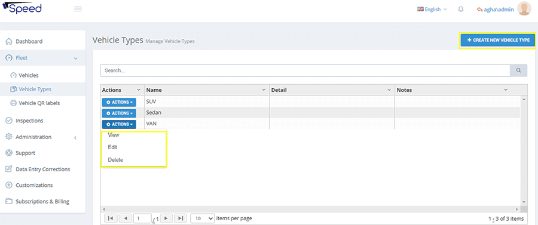
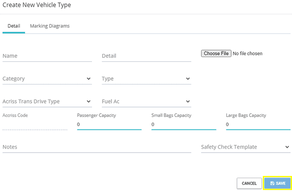

Vehicle Types
Vehicle Types sub-modules allows you to add a vehicle type. Once you have added a vehicle type, you would be able to use it in the App anywhere. For instance, you have added an HGV with all necessary details, you will be able to use it when carrying a walk-around check, status update, and many more.

